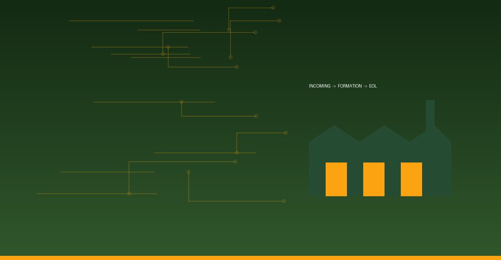

Gigafactory 电池工厂质量控制：从来料到EOL的测试体系
超级工厂大约每秒下线一只成品电芯。在这个节拍下，质量不可能靠末端检验——必须在每个环节测出来。现代电池工厂构建了从来料分析到Pack下线检测的分层QC架构，每层的测试设备选型同时决定良率与质保风险。本文讲清各层如何咬合。

第一层：来料检验
下游的一切质量都继承自来料。正负极粉料按批次检验粒径分布、水分含量与比容量；隔膜卷检验厚度均匀性与拉伸性能；电解液检验水含量——最关键的质量指标杂质，ppm级水分即驱动HF生成与SEI劣化。领先的工厂以内部快检方法对每批来料确认，而不是等供应商COA——因为涂布环节才发现坏批次，生产已经被消耗了几天。
第二层：制程在线检测
从混料到装配，工厂的策略是连续测量而非偶尔抽样。涂布线以在线面密度与测厚闭环控制；辊压监测厚度与密度；视觉系统在产线速度下检测毛刺、针孔与污染——现代CCD检测能抓住肉眼看不见的缺陷。对齐与叠片精度逐芯验证，因为逃过装配的错位就是未来的软短路。原则：每个与现场失效相关的工艺参数，都配在线传感器与控制图。
第三层：化成与老化
化成是每只电芯的首次充电，也是工厂里与QC最相关的最长工序——化成塔数千通道、每批数天。化成曲线本身是质量决策（化学原理见我们的化成与SEI指南），但QC角色在于筛选：化成过程中电压或温度轨迹偏离群体的电芯，在老化前即被标记。老化——温控存储数天至数周——随后充当自检：内部微短路或电解液问题的电芯会表现出可测的自放电与电压衰减，自然出局。
第四层：电芯下线全检
电芯出厂前100%测试而非抽检：在规定温度与荷电状态下测OCV与ACIR（或DCIR）完成容量/内阻分级，经自放电筛查检出短路，并馈入用于模组配组的分选数据库。规范的EOL工位还将每个测量值与电芯序列号归档，构成未来任何现场调查的追溯主干。这就是精密仪器挣回成本的地方：0.1%的OCV误差会错分级，并在下游劣化Pack均衡。
第五层：模组与Pack下线检测
模组与Pack层级的EOL验证装配环节的成果：接触电阻测量验证焊接与连接完整性、冷却液检漏、绝缘电阻与高压互锁检查、BMS通信验证、出货前功能性充放电检查。Pack EOL还做最终容量与内阻确认。经济账残酷：逃过Pack EOL的缺陷变成现场质保事件，代价比本可拦住它的测试高出数个量级。
底层数据架构
现代工厂把QC当作数据问题。每一条测量——来料、在线、化成、EOL——经MES与序列号关联，实现全厂SPC，并越来越多地用机器学习从生产特征预测现场失效。评估测试设备不仅看精度，还要看数据集成：开放协议、逐件追溯、MES可消费的导出格式。
检查清单
- ✓内部确认来料批次，不单独信任供应商COA。
- ✓每个与现场失效相关的工艺参数都配在线传感器。
- ✓把老化用作自放电筛查，不只是等待期。
- ✓每条EOL测量按序列号归档——无例外。
- ✓评估仪器看数据集成，不只看精度。